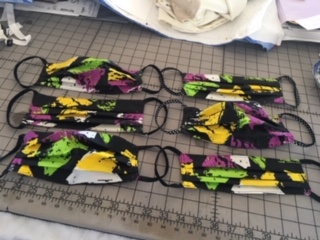
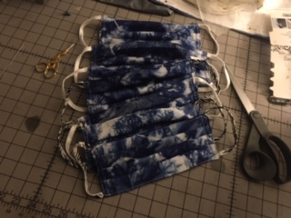

Face masks sewn and donated in the hundreds by Framingham State volunteers

For all the front-line workers keeping the nation afloat throughout the COVID-19 pandemic, there are others, just as crucial, who are working to ensure they have the supplies they need.
One critical supply everyone needs is face masks – worn not only to reduce the chance of catching the virus, but to help prevent it from spreading to others as well.
But as more and more masks are being used after the CDC and Gov. Charlie Baker recommended anyone going outside wear one, manufacturers have not been able to keep up with demand – even for front-line workers.
It’s a dilemma recognized by members of the Fashion Design & Retailing Department at Framingham State University, who are now sewing face masks by the hundreds to donate to local hospitals and nursing homes in need.
“My initial concern was the effectiveness against the virus,” Professor Virginia Noon said about the masks she’s making. “But I quickly learned that anything is better than what they had, which was nothing.”
With 40 masks made and another 40 underway, Noon said she was inspired to sew by close friends and family members who work in the medical field.
“Care givers, doctors, and nurses did not have protection,” she said. “I responded to the immediate need to protect the health-care workers from the virus and also to protect the non-COVID-19 patients from the virus.”
Noon said she currently sews a basic rectangular mask with three tucks and elastic following the guidelines from a hospital in Oregon. She will adapt her pattern to have an opening for filters once she receives a supply of meltbrown cloth – a non-woven fabric used in traditional surgical masks.
“The filter can be discarded and the cotton fabric mask can be washed after wearing,” she said.
Face masks sewn by Professor Virginia Noon
Lab Technician Christine Jansen said she is using two patterns to sew her 100% quilters cotton masks.
The “serger pattern” is quick and easy, and offers space for a center filter, Jansen said. Another pattern for pleated masks can be made using a regular sewing machine. In total, she has made “well over 100 masks.”
Many of these masks have gone to her daughter, who Jansen said is an essential worker. She brings them in for her co-workers to wear.
“When I heard there was a desperate need for sewers to make masks, I started right away,” Jansen added. “I’m extremely happy to help people by being able to use my skills.”
But it’s not just the faculty from Fashion Design & Retailing who are hard at work making these masks, said Department Chair Pamela Sebor-Cable.
“There are so many people doing this,” she added. “We have students, alums, staff, and faculty all working individually on these and donating them to a variety of elder-care homes, hospitals, and other people in need in their area.”
The landlord of one of her students is also a quiltist and they have begun sewing masks together, Sebor-Cable added. “It’s nice to know that in a time of distancing, this is a way people can share a positive experience.”
“Everyone I know with a sewing machine is sewing masks,” said Noon. “People want to help. Those who cannot use a sewing machine are cutting fabric squares and elastic.”
One of Noon’s friends has been cutting squares for her, which saves time and allows her to focus on stitching the masks together, she said.
“I delivered 12 to my doctor’s office and 20 to my brother, who will distribute to friends and neighbors,” Noon added. She said she has a long list of orders to fill.
Noon’s son, a grocery store employee for Market Basket, has also repeatedly received masks from customers, she said. “People making masks are just dropping them off for employees.”
However, with everyone now making masks, materials like elastic bands are becoming harder to come by, said Sebor-Cable, who has sewn 125 masks.
“Fortunately, one of the donations we received in the department a few years back was a couple of 144 yard spools of three-eighths inch elastic,” she said. “I have been using that and sending it to others to use.”
Noon said she has ordered 750 yards of elastic and about 60 yards of meltbrown cloth. “My goal is to distribute these essential supplies to others making masks.”
Speaking of her own masks, “As you are stitching, it is just a good feeling,” Noon said. “Knowing that your efforts may be helping someone remain safe.”
❱ Read this article on The Gatepost’s old website via Internet Archive »